산업안전지도사 (2023-04-01 기출문제)
1과목: 산업안전보건법령
1. 산업안전보건법령상 산업재해발생건수등의 공표대상 사업장에 해당하지 않는 것은?
- 산업재해로 인한 사망자가 연간 2명 이상 발생한 사업장
- 사망만인율(死亡萬人率)이 규모별 같은 업종의 평균 사망만인율 이상인 사업장
- 중대산업사고가 발생한 사업장
- 사업주가 산업재해 발생 사실을 은폐한 사업장
- 사업주가 산업재해 발생에 관한 보고를 최근 3년 이내 1회 이상 하지 않은 사업장
(정답률: 78%)
2. 산업안전보건법령상 상시근로자 100명인 사업장에 안전보건관리책임자를 두어야 하는 사업을 모두 고른 것은?
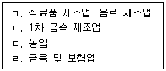
- ㄱ, ㄴ
- ㄴ, ㄷ
- ㄷ, ㄹ
- ㄱ, ㄴ, ㄹ
- ㄱ, ㄴ, ㄷ, ㄹ
(정답률: 73%)
3. 산업안전보건법령상 사업주가 소속 근로자에게 정기적인 안전보건교육을 실시하여야 하는 사업에 해당하는 것은? (단, 다른 감면조건은 고려하지 않음)
- 소프트웨어 개발 및 공급업
- 금융 및 보험업
- 사업지원 서비스업
- 사회복지 서비스업
- 사진처리업
(정답률: 71%)
4. 산업안전보건법령상 안전관리전문기관에 대하여 6개월 이내의 기간을 정하여 업무정지명령을 할 수 있는 사유에 해당하지 않는 것은?
- 지정받은 사항을 위반하여 업무를 수행한 경우
- 거짓이나 그 밖의 부정한 방법으로 지정을 받은 경우
- 정당한 사유 없이 안전관리 또는 보건관리 업무의 수탁을 거부한 경우
- 안전관리 또는 보건관리 업무와 관련된 비치서류를 보존하지 않은 경우
- 안전관리 또는 보건관리 업무 수행과 관련한 대가 외에 금품을 받은 경우
(정답률: 68%)

5. 산업안전보건법령상 건설업체의 산업재해발생률 산출 계산식상 사업주의법 위반으로 인한 것이 아니라고 인정되는 재해에 의한 사고사망자로서 '사고사망자 수' 산정에서 제외되는 경우를 모두 고른 것은?
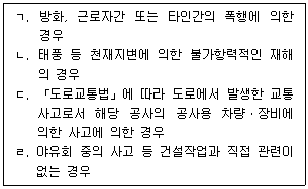
- ㄱ, ㄷ
- ㄴ, ㄹ
- ㄱ, ㄴ, ㄷ
- ㄱ, ㄴ, ㄹ
- ㄱ, ㄴ, ㄷ, ㄹ
(정답률: 67%)
6. 산업안전보건법령상 도급인의 안전조치 및 보건조치에 관한 설명으로 옳은 것은?
- 건설업의 도급인은 작업장의 정기 안전ㆍ보건점검을 분기에 1회 이상 실시하여야 한다.
- 토사석 광업의 도급인은 3일에 1회 이상 작업장 순회점검을 실시하여야 한다.
- 안전 및 보건에 관한 협의체는 도급인 및 그의 수급인 전원으로 구성해야 한다.
- 안전 및 보건에 관한 협의체는 분기별 1회 이상 정기적으로 회의를 개최하고 그 결과를 기록ㆍ보존해야 한다.
- 관계수급인의 공사금액을 포함한 해당 공사의 총공사금액이 10억원 이상인 건설업은 안전보건총괄책임자 지정 대상사업에 해당한다.
(정답률: 66%)
7. 산업안전보건법령상 안전보건관리규정의 세부 내용 중 작업장 안전관리에 관한 사항에 해당하지 않는 것은?(문제 오류로 가답안 발표시 3번으로 발표되었지만 확정답안 발표시 모두 정답처리 되었습니다. 여기서는 가답안인 3번을 누르면 정답 처리 됩니다.)
- 안전ㆍ보건관리에 관한 계획의 수립 및 시행에 관한 사항
- 기계ㆍ기구 및 설비의 방호조치에 관한 사항
- 보호구의 지급 등에 관한 사항
- 위험물질의 보관 및 출입 제한에 관한 사항
- 안전표시ㆍ안전수칙의 종류 및 게시에 관한 사항
(정답률: 74%)
8. 산업안전보건법 제58조(유해한 작업의 도급금지) 규정의 일부이다. ( )에 들어갈 숫자로 옳은 것은?
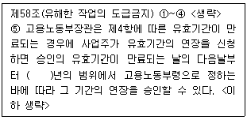
- 1
- 2
- 3
- 4
- 5
(정답률: 59%)
9. 산업안전보건법령상 타워크레인 설치ㆍ해체업의 등록 등에 관한 설명으로 옳지 않은 것은?
- 타워크레인 설치ㆍ해체업을 등록한 자가 등록한 사항 중 업체의 소재지를 변경할 때에는 변경등록을 하여야 한다.
- 타워크레인을 설치하거나 해체하려는 자가 「국가기술자격법」에 따른 비계기능사의 자격을 가진 사람 3명을 보유하였다면, 타워크레인 설치ㆍ해체업을 등록할 수 있다.
- 송수신기는 타워크레인 설치ㆍ해체업의 장비기준에 포함된다.
- 타워크레인 설치ㆍ해체업을 등록하려는 자는 설치ㆍ해체업 등록신청서에 관련서류를 첨부하여 주된 사무소의 소재지를 관할하는 지방고용노동관서의 장에게 제출해야 한다.
- 타워크레인 설치ㆍ해체업의 등록이 취소된 자는 등록이 취소된 날부터 2년 이내에는 타워크레인 설치ㆍ해체업으로 등록받을 수 없다.
(정답률: 66%)
10. 산업안전보건법령상 안전검사를 면제할 수 있는 경우에 해당하지 않는 것은?
- 「방위사업법」제28조제1항에 따른 품질보증을 받은 경우
- 「선박안전법」제8조부터 제12조까지의 규정에 따른 검사를 받은 경우
- 「에너지이용 합리화법」제39조제4항에 따른 검사를 받은 경우
- 「항만법」제26조제1항제3호에 따른 검사를 받은 경우
- 「화학물질관리법」제24조제3항 본문에 따른 정기검사를 받은 경우
(정답률: 61%)
11. 산업안전보건법령상 유해하거나 위험한 기계ㆍ기구에 대한 방호조치에 관한 설명으로 옳지 않은 것은?
- 동력으로 작동하는 금속절단기에 날접촉 예방장치를 설치하여야 사용에 제공할 수 있다.
- 동력으로 작동하는 기계ㆍ기구로서 속도조절 부분이 있는 것은 속도조절 부분에 덮개를 부착하거나 방호망을 설치하여야 양도할 수 있다.
- 사업주는 방호조치가 정상적인 기능을 발휘할 수 있도록 방호조치와 관련되는 장치를 상시적으로 점검하고 정비하여야 한다.
- 동력으로 작동하는 기계ㆍ기구의 방호조치를 해체하려는 경우 사업주의 허가를 받아야 한다.
- 동력으로 작동하는 진공포장기에 구동부 방호 연동장치를 설치하지 않고 대여의 목적으로 진열한 자는 3년 이하의 징역 또는 3천만원 이하의 벌금에 처한다.
(정답률: 59%)
12. 산업안전보건법령상 주요 구조 부분을 변경하는 경우 안전인증을 받아야 하는 기계 및 설비에 해당하지 않는 것은?
- 컨베이어
- 프레스
- 전단기 및 절곡기
- 사출성형기
- 롤러기
(정답률: 61%)
13. 산업안전보건법령상 상시근로자 30명인 도매업의 사업주가 일용근로자를 제외한 근로자에게 실시해야 하는 안전보건교육 교육과정별 교육시간 중 채용시 교육의 교육시간으로 옳은 것은? (단, 다른 감면조건은 고려하지 않음)
- 30분 이상
- 1시간 이상
- 2시간 이상
- 3시간 이상
- 4시간 이상
(정답률: 60%)
14. 산업안전보건법령상 유해성ㆍ위험성 조사 제외 화학물질에 해당하는 것을 모두 고른 것은? (단, 고용노동부장관이 공표하거나 고시하는 물질은 고려하지 않음)
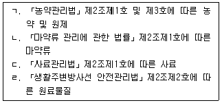
- ㄱ, ㄴ
- ㄷ, ㄹ
- ㄱ, ㄴ, ㄷ
- ㄴ, ㄷ, ㄹ
- ㄱ, ㄴ, ㄷ, ㄹ
(정답률: 45%)
15. 산업안전보건법령상 자율안전확인의 신고에 관한 설명으로 옳지 않은 것은?
- 「산업표준화법」제15조에 따른 인증을 받은 경우에는 자율안전확인의 신고를 면제할 수 있다.
- 롤러기 급정지장치는 자율안전확인대상기계등에 해당한다.
- 자율안전확인의 표시는 「국가표준기본법 시행령」제15조의7제1항에 따른 표시기준 및 방법에 따른다.
- 자율안전확인 표시의 사용 금지 공고내용에 사업장 소재지가 포함되어야 한다.
- 고용노동부장관은 자율안전확인표시의 사용을 금지한 날부터 20일 이내에 그 사실을 관보 등에 공고하여야 한다.
(정답률: 66%)
16. 산업안전보건법령상 안전보건관리책임자 등에 대한 직무교육 중 신규교육이 면제되는 사람에 관한 내용이다. ( )에 들어갈 숫자로 옳은 것은?
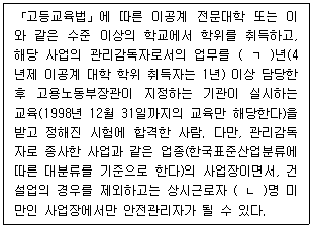
- ㄱ: 2, ㄴ: 200
- ㄱ: 2, ㄴ: 300
- ㄱ: 3, ㄴ: 200
- ㄱ: 3, ㄴ: 300
- ㄱ: 5, ㄴ: 200
(정답률: 57%)
17. 산업안전보건법령상 서류의 보존기간이 3년인 것을 모두 고른 것은?
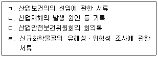
- ㄱ, ㄷ
- ㄴ, ㄹ
- ㄱ, ㄴ, ㄹ
- ㄴ, ㄷ, ㄹ
- ㄱ, ㄴ, ㄷ, ㄹ
(정답률: 61%)
18. 산업안전보건법령상 유해인자의 유해성ㆍ위험성 분류기준에 관한 설명으로 옳은 것을 모두 고른 것은?
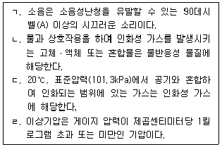
- ㄱ, ㄴ
- ㄷ, ㄹ
- ㄱ, ㄴ, ㄷ
- ㄴ, ㄷ, ㄹ
- ㄱ, ㄴ, ㄷ, ㄹ
(정답률: 49%)
19. 산업안전보건법령상 근로환경의 개선에 관한 설명으로 옳지 않은 것은?
- 도급인의 사업장에서 관계수급인 또는 관계수급인의 근로자가 작업을 하는 경우에는 도급인은 그 사업장에 소속된 사람 중 산업위생관리산업기사 이상의 자격을 가진 사람으로 하여금 작업환경측정을 하도록 하여야 한다.
- 사업주는 근로자대표가 요구하면 작업환경측정 시 근로자대표를 참석시켜야 한다.
- 「의료법」에 따른 의원 또는 한의원은 작업환경측정기관으로 고용노동부장관의 승인을 받을 수 있다.
- 한국산업안전보건공단은 작업환경측정 결과가 노출기준 미만인데도 직업병 유소견자가 발생한 경우에는 작업환경측정 신뢰성평가를 할 수 있다.
- 사업주는 산업안전보건위원회 또는 근로자대표가 요구하면 작업환경측정 결과에 대한 설명회 등을 개최하여야 한다.
(정답률: 66%)
20. 산업안전보건법령상 공정안전보고서에 관한 설명으로 옳지 않은 것은?
- 원유 정제처리업의 보유설비가 있는 사업장의 사업주는 공정안전보고서를 작성하여야 한다.
- 사업주가 공정안전보고서를 작성할 때, 산업안전보건위원회가 설치되어 있지 아니한 사업장의 경우에는 근로자대표의 의견을 들어야 한다.
- 공정안전보고서에는 비상조치계획이 포함되어야 하고, 그 세부 내용에는 주민홍보계획을 포함해야 한다.
- 원자력 설비는 공정안전보고서의 제출 대상인 유해하거나 위험한 설비에 해당한다.
- 공정안전보고서 이행상태평가의 방법 등 이행상태평가에 필요한 세부적인 사항은 고용노동부장관이 정한다.
(정답률: 59%)
21. 산업안전보건법령상 유해위험방지계획서 제출 대상인 건설공사에 해당하지 않는 것은? (단, 자체심사 및 확인업체의 사업주가 착공하려는 건설공사는 제외함)
- 연면적 3천제곱미터 이상인 냉동ㆍ냉장 창고시설의 설비공사
- 최대 지간(支間)길이(다리의 기둥과 기둥의 중심사이의 거리)가 50미터 이상인 다리의 건설등 공사
- 지상높이가 31미터 이상인 건축물의 건설등 공사
- 저수용량 2천만톤 이상의 용수 전용 댐의 건설등 공사
- 깊이 10미터 이상인 굴착공사
(정답률: 68%)
22. 산업안전보건법령상 건강진단 및 건강관리에 관한 설명으로 옳지 않은 것은?
- 사업주가 「선원법」에 따른 건강진단을 실시한 경우에는 그 건강진단을 받은 근로자에 대하여 일반건강진단을 실시한 것으로 본다.
- 일반건강진단의 제1차 검사항목에 흉부방사선 촬영은 포함되지 않는다.
- 사업주는 특수건강진단의 결과를 근로자의 건강 보호 및 유지 외의 목적으로 사용해서는 아니 된다.
- 일반건강진단, 특수건강진단, 배치전건강진단, 수시건강진단, 임시건강진단의 비용은 「국민건강보험법」에서 정한 기준에 따른다.
- 사업주는 배치전건강진단을 실시하는 경우 근로자대표가 요구하면 근로자대표를 참석시켜야 한다.
(정답률: 70%)
23. 산업안전보건법령상 지도사 보수교육에 관한 설명이다. ( )에 들어갈 숫자로 옳은 것은?
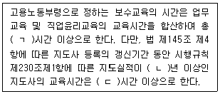
- ㄱ: 10, ㄴ: 1, ㄷ: 5
- ㄱ: 10, ㄴ: 2, ㄷ: 10
- ㄱ: 20, ㄴ: 1, ㄷ: 5
- ㄱ: 20, ㄴ: 2, ㄷ: 10
- ㄱ: 20, ㄴ: 2, ㄷ: 15
(정답률: 68%)
24. 산업안전보건법령상 안전보건진단을 받아 안전보건개선계획을 수립할 대상으로 옳은 것을 모두 고른 것은?
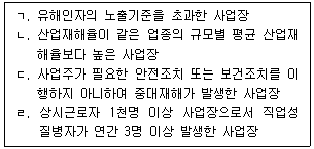
- ㄱ, ㄴ
- ㄷ, ㄹ
- ㄱ, ㄴ, ㄷ
- ㄴ, ㄷ, ㄹ
- ㄱ, ㄴ, ㄷ, ㄹ
(정답률: 41%)
25. 산업안전보건법령상 산업안전지도사와 산업보건지도사의 직무에 공통적으로 해당되는 것은?
- 유해ㆍ위험의 방지대책에 관한 평가ㆍ지도
- 근로자 건강진단에 따른 사후관리 지도
- 작업환경의 평가 및 개선 지도
- 공정상의 안전에 관한 평가ㆍ지도
- 안전보건개선계획서의 작성
(정답률: 59%)
2과목: 산업안전일반
26. 산업안전보건법상 산업안전보건위원회의 심의ㆍ의결 사항으로 옳은 것을 모두 고른 것은?
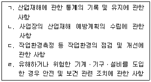
- ㄱ
- ㄴ, ㄹ
- ㄷ, ㄹ
- ㄱ, ㄴ, ㄷ
- ㄱ, ㄴ, ㄷ, ㄹ
(정답률: 59%)
27. 산업안전보건법령상 안전보건교육 교육대상별 교육내용에서 특별교육 대상에 해당하지 않는 작업명은?
- 전압이 75볼트 이상인 정전 및 활선작업
- 콘크리트 파쇄기를 사용하여 하는 파쇄작업(2미터 이상인 구축물의 파쇄작업만 해당한다)
- 굴착면의 높이가 2미터 이상이 되는 지반 굴착(터널 및 수직갱 외의 갱 굴착은 제외한다)작업
- 선박에 짐을 쌓거나 부리거나 이동시키는 작업
- 게이지 압력을 제곱미터당 1킬로그램 이상으로 사용하는 압력용기의 설치 및 취급작업
(정답률: 47%)
28. 교육훈련 기법에서 강의법(Lecture method)의 장점으로 옳지 않은 것은?
- 수강자의 학습참여도가 높고 적극성과 협조성을 부여하는 데 효과적이다.
- 오래된 전통 교수방법이며 안전지식의 전달방법으로 유용하다.
- 시간과 장소의 제약이 비교적 적다.
- 수업의 도입이나 초기단계에 적용이 효과적이다.
- 많은 인원을 대상으로 교육할 수 있다.
(정답률: 61%)
29. 원인결과분석(CCA)기법에 관한 기술지침상 원인결과분석의 평가절차를 순서대로 옳게 나열한 것은?
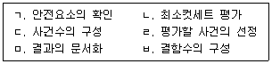
- ㄱ→ ㄹ→ㄷ →ㅂ→ ㄴ→ㅁ
- ㄱ→ ㄹ→ㅂ →ㄴ→ ㄷ→ㅁ
- ㄷ→ ㅂ→ㄴ →ㄹ→ ㄱ→ㅁ
- ㄹ→ ㄱ→ㄷ →ㅂ→ ㄴ→ㅁ
- ㄹ→ ㄱ→ㅂ →ㄴ→ ㄷ→ㅁ
(정답률: 57%)
30. 안전관리 활동을 통해서 얻을 수 있는 긍정적인 효과가 아닌 것은?
- 근로자의 사기 진작
- 생산성 향상
- 손실비용 증가
- 신뢰성 유지 및 확보
- 이윤 증대
(정답률: 67%)
31. 현장이나 직장에서 직속상사가 부하직원에게 일상 업무를 통하여 지식, 기능, 문제해결능력 및 태도 등을 교육 훈련하는 방법으로 개별교육에 적합한 것은?
- TWI(Training Within Industry)
- OJT(On the Job Training)
- ATP(Administration Training Program)
- MTP(Management Training Program)
- Off JT(Off the Job Training)
(정답률: 67%)
32. 재해의 통계적 원인분석 방법에 해당하지 않는 것은?
- 파레토도
- 특성요인도
- 소시오메트리도
- 클로즈분석도
- 관리도
(정답률: 62%)
33. 제조물 책임법에 관한 내용으로 옳지 않은 것은?
- “제조업자”란 제조물의 제조ㆍ가공 또는 수입을 업(業)으로 하는 자를 말한다.
- 동일한 손해에 대하여 배상할 책임이 있는 자가 2인 이상인 경우에는 연대하여 그 손해를 배상할 책임이 있다.
- “제조물”이란 제조되거나 가공된 동산(다른 동산이나 부동산의 일부를 구성하는 경우를 포함한다)을 말한다.
- “설계상의 결함”이란 제조업자가 합리적인 설명ㆍ지시ㆍ경고 또는 그 밖의 표시를 하였더라면 해당 제조물에 의하여 발생할 수 있는 피해나 위험을 줄이거나 피할 수 있었음에도 이를 하지 아니한 경우를 말한다.
- 제조업자는 제조물의 결함으로 생명ㆍ신체 또는 재산에 손해(그 제조물에 대하여만 발생한 손해는 제외한다)를 입은 자에게 그 손해를 배상하여야 한다.
(정답률: 63%)
34. 제어시스템에서의 안전무결성등급(SIL)에 관한 일부내용이다. ( )에 들어갈 것으로 옳은 것은?
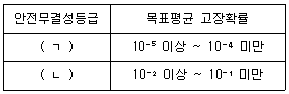
- ㄱ: 1, ㄴ: 4
- ㄱ: 1, ㄴ: 5
- ㄱ: 4, ㄴ: 1
- ㄱ: 5, ㄴ: 1
- ㄱ: 5, ㄴ: 2
(정답률: 52%)
35. 산업재해발생의 기본 원인 4M에 해당하지 않는 것은?
- Man
- Method
- Machine
- Media
- Management
(정답률: 57%)
36. 공정안전성 분석(K-PSR)기법에 관한 기술지침상 “위험형태”에 해당하는 것을 모두 고른 것은?
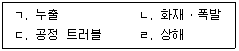
- ㄱ, ㄴ
- ㄱ, ㄷ
- ㄴ, ㄷ
- ㄱ, ㄴ, ㄷ
- ㄱ, ㄴ, ㄷ, ㄹ
(정답률: 50%)
37. 인간공학적 동작 경제원칙에 관한 내용으로 옳지 않은 것은?
- 양손은 동시에 시작하고 동시에 끝나지 않도록 한다.
- 양팔의 동작은 동시에 서로 반대방향으로 대칭적으로 움직이도록 한다.
- 손과 신체동작은 작업을 원만하게 수행할 수 있는 범위 내에서 가장 낮은 동작등급을 사용하도록 한다.
- 족답장치를 활용하여 양손이 다른 일을 할 수 있도록 한다.
- 휴식시간을 제외하고는 양손이 동시에 쉬지 않도록 한다.
(정답률: 56%)
38. 부품 신뢰도가 A인 동일한 4개의 부품을 병렬로 연결하였을 때 전체시스템의 신뢰도는 0.9984가 되었다. 이 부품 신뢰도 A는 얼마인가?
- 0.5
- 0.6
- 0.7
- 0.8
- 0.9
(정답률: 46%)
39. 안전성평가 6단계에서 단계별 내용으로 옳지 않은 것은?
- 2단계: 정성적 평가
- 3단계: 정량적 평가
- 4단계: 안전대책
- 5단계: 재해정보에 의한 재평가
- 6단계: ETA에 의한 재평가
(정답률: 51%)
40. 인간-기계시스템 설계과정 6단계를 순서대로 옳게 나열한 것은?
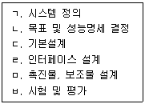
- ㄱ→ ㄴ→ㄷ →ㄹ→ ㅁ→ㅂ
- ㄱ→ ㄴ→ㄹ →ㄷ→ ㅁ→ㅂ
- ㄱ→ ㄷ→ㄴ →ㅁ→ ㄹ→ㅂ
- ㄴ→ ㄱ→ㄷ →ㄹ→ ㅁ→ㅂ
- ㄴ→ ㄷ→ㄱ →ㅁ→ ㄹ→ㅂ
(정답률: 50%)
41. 사고 피해예측 기법에 관한 기술지침상 위험 기준의 정립에 관한 내용이다. ( )에 들어갈 것으로 옳은 것은?
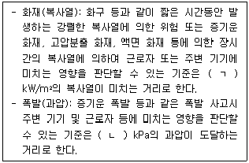
- ㄱ: 1, ㄴ: 0.07
- ㄱ: 1, ㄴ: 6.9
- ㄱ: 5, ㄴ: 0.07
- ㄱ: 5, ㄴ: 6.9
- ㄱ: 10, ㄴ: 0.07
(정답률: 44%)
42. A부품의 고장확률 밀도함수는 평균고장률이 시간당 10-2 인 지수분포를 따르고 있다. 이 부품을 180분 작동시켰을 때의 불신뢰도는? (단, 소수점 셋째자리에서 반올림하여 소수점 둘째자리까지 구하시오.)
- 0.03
- 0.⑤
- 0.95
- 0.97
- 0.99
(정답률: 36%)
43. 산업안전보건기준에 관한 규칙상 공기압축기를 가동하기 전에 관리감독자가 하여야 하는 작업시작 전 점검사항으로 옳지 않은 것은?
- 슬라이드 또는 칼날에 의한 위험방지 기구의 기능
- 압력방출장치의 기능
- 언로드밸브(unloading valve)의 기능
- 회전부의 덮개
- 드레인밸브(drain valve)의 조작 및 배수
(정답률: 62%)
44. 재해사례연구의 진행단계에 관한 내용이다. 진행단계를 순서대로 옳게 나열한 것은?
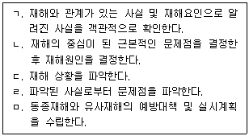
- ㄱ→ ㄷ→ㄴ →ㄹ→ ㅁ
- ㄱ→ ㄷ→ㄹ →ㄴ→ ㅁ
- ㄴ→ ㄷ→ㄱ →ㄹ→ ㅁ
- ㄷ→ ㄱ→ㄴ →ㄹ→ ㅁ
- ㄷ→ ㄱ→ㄹ →ㄴ→ ㅁ
(정답률: 55%)
45. 암실 내에서 정지된 작은 빛을 응시하고 있으면 그 빛이 움직이는 것처럼 보이는 것을 자동운동이라고 한다. 자동운동이 생기기 쉬운 조건으로 옳은 것은?
- 광점이 클 것
- 광의 강도가 작을 것
- 시야의 다른 부분이 밝을 것
- 대상이 복잡할 것
- 광의 눈부심과 조도가 클 것
(정답률: 54%)
46. 통전경로별 위험도가 큰 순서대로 옳게 나열한 것은?
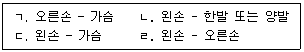
- ㄱ ＞ㄴ ＞ㄷ ＞ㄹ
- ㄴ ＞ㄷ ＞ㄱ ＞ㄹ
- ㄷ ＞ㄱ ＞ㄴ ＞ㄹ
- ㄹ ＞ㄱ ＞ㄴ ＞ㄷ
- ㄹ ＞ㄱ ＞ㄷ ＞ㄴ
(정답률: 62%)
47. 반지름 30 cm의 조종구를 20° 움직였을 때 표시계기의 지침이 2 cm 이동하였다면, 이 계기의 통제표시비는?
- 약 4.12
- 약 5.23
- 약 7.34
- 약 8.42
- 약 10.46
(정답률: 45%)
48. 시몬즈(Simonds)의 재해손실비 평가방법에 관한 내용이다. ( )에 들어갈 것으로 옳은 것은?
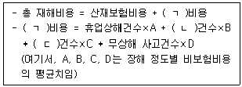
- ㄱ: 비보험, ㄴ: 입원상해, ㄷ: 유족상해
- ㄱ: 간접, ㄴ: 입원상해, ㄷ: 비응급조치
- ㄱ: 비보험, ㄴ: 통원상해, ㄷ: 응급조치
- ㄱ: 간접, ㄴ: 통원상해, ㄷ: 중상해
- ㄱ: 비보험, ㄴ: 물적손실, ㄷ: 비응급조치
(정답률: 57%)
49. 매슬로우(Maslow)의 동기부여이론(욕구5단계이론)에 관한 내용으로 옳지 않은 것은?
- 제1단계: 생리적 욕구(생명유지의 기본적 욕구)
- 제2단계: 도전 욕구(새로운 것에 대한 도전 욕구)
- 제3단계: 사회적 욕구(소속감과 애정 욕구)
- 제4단계: 존경 욕구(인정받으려는 욕구)
- 제5단계: 자아실현 욕구(잠재적 능력의 실현 욕구)
(정답률: 64%)
50. 산업안전보건기준에 관한 규칙에서 정하고 있는 “충격소음작업” 정의의 일부내용이다. ( )에 들어갈 것으로 옳은 것은?
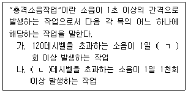
- ㄱ: 1천, ㄴ: 125
- ㄱ: 3천, ㄴ: 125
- ㄱ: 5천, ㄴ: 125
- ㄱ: 8천, ㄴ: 130
- ㄱ: 1만, ㄴ: 130
(정답률: 60%)
3과목: 기업진단ㆍ지도
51. 인사평가의 방법을 상대평가법과 절대평가법으로 구분할 때 상대평가법에 속하는 기법을 모두 고른 것은?
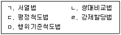
- ㄱ, ㄴ, ㄷ
- ㄱ, ㄴ, ㄹ
- ㄱ, ㄷ, ㄹ
- ㄴ, ㄷ, ㅁ
- ㄴ, ㄹ, ㅁ
(정답률: 53%)
52. 기능별 부문화와 제품별 부문화를 결합한 조직구조는?
- 가상조직(virtual organization)
- 하이퍼텍스트조직(hypertext organization)
- 애드호크라시(adhocracy)
- 매트릭스조직(matrix organization)
- 네트워크조직(network organization)
(정답률: 61%)
53. 아담스(J. Adams)의 공정성이론에서 투입과 산출의 내용 중 투입이 아닌 것은?
- 시간
- 노력
- 임금
- 경험
- 창의성
(정답률: 59%)
54. 집단의사결정기법에 관한 설명으로 옳지 않은 것은?
- 델파이법(Delphi technique)은 의사결정 시간이 짧아 긴박한 문제의 해결에 적합하다.
- 브레인스토밍(brainstorming)은 다른 참여자의 아이디어에 대해 비판할 수 없다.
- 프리모텀(premortem) 기법은 어떤 프로젝트가 실패했다고 미리 가정하고 그 실패의 원인을 찾는 방법이다.
- 지명반론자법은 악마의 옹호자(devil's advocate) 기법이라고도 하며, 집단사고의 위험을 줄이는 방법이다.
- 명목집단법은 참여자들 간에 토론을 하지 못한다.
(정답률: 54%)
55. 부당노동행위 중 근로자가 어느 노동조합에 가입하지 아니할 것 또는 탈퇴할 것을 고용조건으로 하거나 특정한 노동조합의 조합원이 될 것을 고용조건으로 하는 행위는?
- 불이익대우
- 단체교섭거부
- 지배ㆍ개입 및 경비원조
- 정당한 단체행동참가에 대한 해고 및 불이익대우
- 황견계약
(정답률: 59%)
56. 식스 시그마(Six Sigma) 분석도구 중 품질 결함의 원인이 되는 잠재적인 요인들을 체계적으로 표현해주며, Fishbone Diagram으로도 불리는 것은?
- 린 차트
- 파레토 차트
- 가치흐름도
- 원인결과 분석도
- 프로세스 관리도
(정답률: 54%)
57. 수요를 예측하는데 있어 과거 자료보다는 최근 자료가 더 중요한 역할을 한다는 논리에 근거한 지수평활법을 사용하여 수요를 예측하고자 한다. 다음 자료의 수요 예측값(Ft)은?
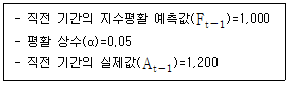
- 1,0⑤
- 1,010
- 1,015
- 1,020
- 1,200
(정답률: 45%)
58. 재고량에 관한 의사결정을 할 때 고려해야 하는 재고유지 비용을 모두 고른 것은?
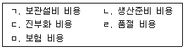
- ㄱ, ㄴ, ㄷ
- ㄱ, ㄴ, ㄹ
- ㄱ, ㄷ, ㅁ
- ㄱ, ㄹ, ㅁ
- ㄴ, ㄷ, ㄹ
(정답률: 56%)
59. 서비스 수율관리(yield management)가 효과적으로 나타나는 경우가 아닌 것은?
- 변동비가 높고 고정비가 낮은 경우
- 재고가 저장성이 없어 시간이 지나면 소멸하는 경우
- 예약으로 사전에 판매가 가능한 경우
- 수요의 변동이 시기에 따라 큰 경우
- 고객특성에 따라 수요를 세분화할 수 있는 경우
(정답률: 53%)
60. 오건(D. Organ)이 범주화한 조직시민행동의 유형에서 불평, 불만, 험담 등을 하지 않고, 있지도 않은 문제를 과장해서 이야기 하지 않는 행동에 해당하는 것은?
- 시민덕목(civic virtue)
- 이타주의(altruism)
- 성실성(conscientiousness)
- 스포츠맨십(sportsmanship)
- 예의(courtesy)
(정답률: 54%)
61. 직업 스트레스에 관한 설명으로 옳지 않은 것은?
- 비르(T. Beehr)와 프랜즈(T. Franz)는 직업 스트레스를 의학적 접근, 임상ㆍ상담적 접근, 공학심리학적 접근, 조직심리학적 접근 등 네 가지 다른 관점에서 설명할 수 있다고 제안하였다.
- 요구-통제 모델(Demands-Control Model)은 업무량 이외에도 다양한 요구가 존재한다는 점을 인식하고, 이러한 다양한 요구가 종업원의 안녕과 동기에 미치는 영향을 연구한다.
- 자원보존 이론(Conservation of Resources Theory)은 종업원들은 시간에 걸쳐 자원을 축적하려는 동기를 가지고 있으며, 자원의 실제적 손실 또는 손실의 위협이 그들에게 스트레스를 경험하게 한다고 주장한다.
- 셀리에(H. Selye)의 일반적 적응증후군 모델은 경고(alarm), 저항(resistance), 소진(exhaustion)의 세 가지 단계로 구성된다.
- 직업 스트레스 요인 중 역할 모호성(role ambiguity)은 종업원이 자신의 직무기능과 책임이 무엇인지 불명확하게 느끼는 정도를 말한다.
(정답률: 48%)
62. 직무만족을 측정하는 대표적인 척도인 직무기술 지표(Job Descriptive Index: JDI)의 하위 요인이 아닌 것은?
- 업무
- 동료
- 관리 감독
- 승진 기회
- 작업 조건
(정답률: 34%)
63. 해크만(J. Hackman)과 올드햄(G. Oldham)의 직무특성 이론은 5개의 핵심직무특성이 중요 심리상태라고 불리는 다음 단계와 직접적으로 연결된다고 주장하는데, '일의 의미감(meaningfulness) 경험'이라는 심리상태와 관련있는 직무특성을 모두 고른 것은?
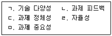
- ㄱ, ㄷ
- ㄱ, ㄷ, ㅁ
- ㄴ, ㄹ, ㅁ
- ㄷ, ㄹ, ㅁ
- ㄴ, ㄷ, ㄹ, ㅁ
(정답률: 47%)
64. 브룸(V. Vroom)의 기대 이론(expectancy theory)에서 일정 수준의 행동이나 수행이 결과적으로 어떤 성과를 가져올 것이라는 믿음을 나타내는 것은?(문제 오류로 가답안 발표시 3번으로 발표되었지만 확정답안 발표시 1, 3번이 정답처리 되었습니다. 여기서는 가답안인 3번을 누르시면 정답 처리 됩니다.)
- 기대(expectancy)
- 방향(direction)
- 도구성(instrumentality)
- 강도(intensity)
- 유인가(valence)
(정답률: 57%)
65. 라스뮈센(J. Rasmussen)의 수행수준 이론에 관한 설명으로 옳은 것은?
- 실수(slip)의 기본적인 분류는 3가지 주제에 대한 것으로 의도형성에 따른 오류, 잘못된 활성화에 의한 오류, 잘못된 촉발에 의한 오류이다.
- 인간의 행동을 숙련(skill)에 바탕을 둔 행동, 규칙(rule)에 바탕을 둔 행동, 지식(knowledge)에 바탕을 둔 행동으로 분류한다.
- 오류의 종류로 인간공학적 설계오류, 제작오류, 검사오류, 설치 및 보수오류, 조작오류, 취급오류를 제시한다.
- 오류를 분류하는 방법으로 오류를 일으키는 원인에 의한 분류, 오류의 발생결과에 의한 분류, 오류가 발생하는 시스템 개발단계에 의한 분류가 있다.
- 사람들의 오류를 분석하고 심리수준에서 구체적으로 설명할 수 있는 모델이며 욕구체계, 기억체계, 의도체계, 행위체계가 존재한다.
(정답률: 50%)
66. 착시를 크기 착시와 방향 착시로 구분하는 경우, 동일한 물리적인 길이와 크기를 가지는 선이나 형태를 다르게 지각하는 크기 착시에 해당하지 않는 것은?
- 뮬러-라이어(Müller-Lyer) 착시
- 폰조(Ponzo) 착시
- 에빙하우스(Ebbinghaus) 착시
- 포겐도르프(Poggendorf) 착시
- 델뵈프(Delboeuf) 착시
(정답률: 47%)
67. 집단(팀)에 관한 다음 설명에 해당하는 모델은?
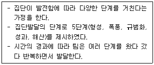
- 캠피온(Campion)의 모델
- 맥그래스(McGrath)의 모델
- 그래드스테인(Gladstein)의 모델
- 해크만(Hackman)의 모델
- 터크만(Tuckman)의 모델
(정답률: 51%)
68. 산업재해이론 중 아담스(E. Adams)의 사고연쇄 이론에 관한 설명으로 옳은 것은?(문제 오류로 가답안 발표시 1번으로 발표되었지만 확정답안 발표시 1, 2번이 정답처리 되었습니다. 여기서는 가답안인 1번을 누르시면 정답 처리 됩니다.)
- 관리구조의 결함, 전술적 오류, 관리기술 오류가 연속적으로 발생하게 되며 사고와 재해로 이어진다.
- 불안전상태와 불안전행동을 어떻게 조절하고 관리할 것인가에 관심을 가지고 위험해결을 위한 노력을 기울인다.
- 긴장 수준이 지나치게 높은 작업자가 사고를 일으키기 쉽고 작업수행의 질도 떨어진다.
- 작업자의 주의력이 저하하거나 약화될 때 작업의 질은 떨어지고 오류가 발생해서 사고나 재해가 유발되기 쉽다.
- 사고나 재해는 사고를 낸 당사자나 사고발생 당시의 불안전행동, 그리고 불안전행동을 유발하는 조건과 감독의 불안전 등이 동시에 나타날 때 발생한다.
(정답률: 63%)
69. 다음은 산업위생을 연구한 학자이다. 누구에 관한 설명인가?
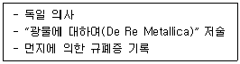
- Alice Hamilton
- Percival Pott
- Thomas Percival
- Georgius Agricola
- Pliny the Elder
(정답률: 58%)
70. 화학물질 및 물리적 인자의 노출기준에 관한 설명으로 옳지 않은 것은?
- “최고노출기준(C)”이란 근로자가 1일 작업시간동안 잠시라도 노출되어서는 아니 되는 기준이다.
- 노출기준을 이용할 경우에는 근로시간, 작업의 강도, 온열조건, 이상기압도 고려하여야 한다.
- “Skin” 표시물질은 피부자극성을 뜻하는 것은 아니며, 점막과 눈 그리고 경피로 흡수되어 전신 영향을 일으킬 수 있는 물질이다.
- 발암성 정보물질의 표기는 화학물질의 분류ㆍ표시 및 물질안전보건자료에 관한 기준에 따라 1A, 1B, 2로 표기한다.
- “단시간노출기준(STEL)”이란 15분간의 시간가중평균노출값으로서 노출농도가 시간가중평균노출기준(TWA)을 초과하고 단시간노출기준(STEL) 이하인 경우에는 1회 노출 지속시간이 15분 미만이어야 하고, 이러한 상태가 1일 3회 이하로 발생하여야 하며, 각 노출의 간격은 45분 이상이어야 한다.
(정답률: 54%)
71. 근로자건강진단 실무지침에서 화학물질에 대한 생물학적 노출지표의 노출기준 값으로 옳지 않은 것은?
- 노말-헥산: [소변 중 2,5-헥산디온, 5 mg/L]
- 메틸클로로포름: [소변 중 삼염화초산, 10 mg/L]
- 크실렌: [소변 중 메틸마뇨산, 1.5 g/g crea]
- 톨루엔: [소변 중 o-크레졸, 1 mg/g crea]
- 인듐: [혈청 중 인듐, 1.2㎍/L]
(정답률: 43%)
72. 후드 개구부 면에서 제어속도(capture velocity)를 측정해야 하는 후드 형태에 해당하는 것은?
- 외부식 후드
- 포위식 후드
- 리시버(receiver)식 후드
- 슬롯(slot) 후드
- 캐노피(canopy) 후드
(정답률: 53%)
73. 카드뮴 및 그 화합물에 대한 특수건강진단 시 제1차 검사항목에 해당하는 것은? (단, 근로자는 해당 작업에 처음 배치되는 것은 아니다.)
- 소변 중 카드뮴
- 베타 2 마이크로글로불린
- 혈중 카드뮴
- 객담세포검사
- 단백뇨정량
(정답률: 47%)
74. 근로자 건강진단 실시기준에서 유해요인과 인체에 미치는 영향으로 옳지 않은 것은?
- 니켈 - 폐암, 비강암, 눈의 자극증상
- 오산화바나듐 - 천식, 폐부종, 피부습진
- 베릴륨 - 기침, 호흡곤란, 폐의 육아종 형성
- 카드뮴 - 만성 폐쇄성 호흡기 질환 및 폐기종
- 망간 - 접촉성 피부염, 비중격 점막의 괴사
(정답률: 48%)
75. 작업환경측정 대상 유해인자에는 해당하지만 특수건강진단 대상 유해인자는 아닌 것은?
- 디에틸아민
- 디에틸에테르
- 무수프탈산
- 브롬화메틸
- 피리딘
(정답률: 41%)